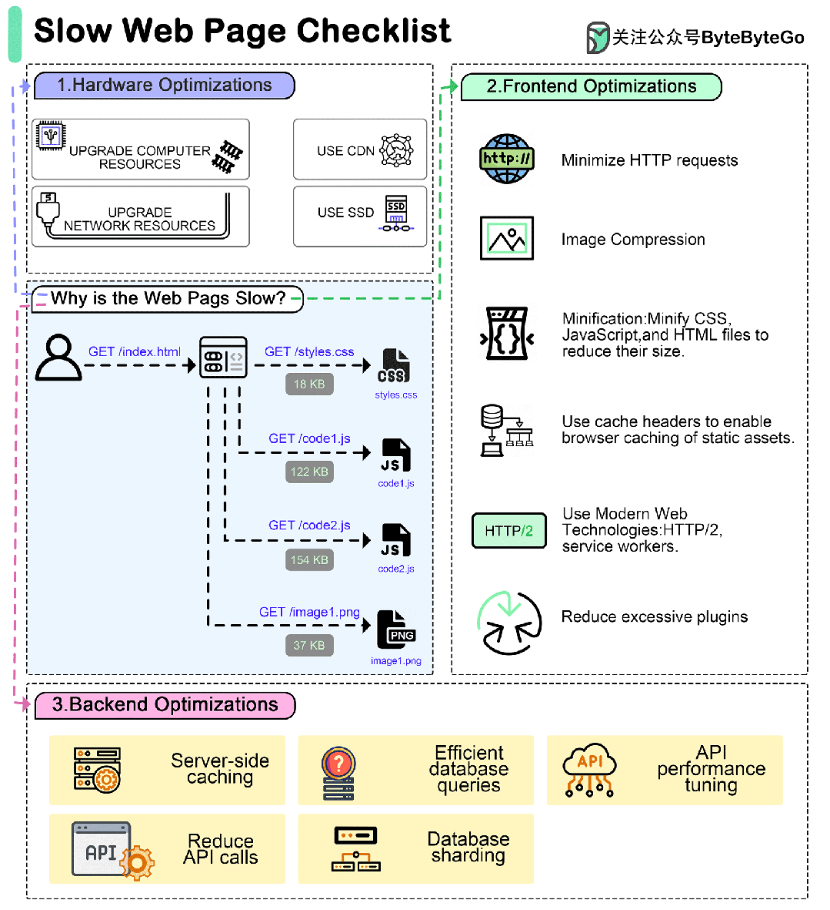

网页太慢了怎么排查？
如何排除网页速度慢的故障？
优化运行缓慢的网页涉及多个层面的改进，可分为硬件、前端和后台优化。
下面是一份全面的指南：

01 硬件优化
服务器资源
- 升级服务器：确保服务器能为流量提供足够的资源（CPU、内存、带宽等）。
- 使用内容分发网络（CDN）：在全球范围内分发内容，以减少延迟和加载时间。
- 服务器位置部署：选择离主要用户群较近的服务器位置，以减少延迟。
硬件升级
- 使用固态硬盘而不用机械硬盘：使用固态硬盘（SSD）以加快数据检索速度。
- 负载平衡器：使用负载平衡器在多个服务器之间分配流量。
网络优化
- 优化网络配置：配置网络设置，提高数据传输速率。
- DDoS 保护：使用 DDoS 保护服务，防止可能导致网站运行速度减慢的攻击。
02 前端优化
最小化 HTTP 请求
- 合并文件：合并 CSS 和 JS 文件，以减少 HTTP 请求的数量。
- 使用 Sprites：将多个图像合并为一个 Sprite 表。
优化图片
- 压缩图片：使用 TinyPNG 或 ImageOptim 等工具压缩图片。
- 响应式图像：使用响应式图像技术，根据用户的设备提供大小合适的图像。
减少渲染阻塞资源
- 同步和延迟：对非关键的 JS 文件使用异步或延迟属性。
- 内联关键 CSS：内联关键 CSS，以更快地呈现折叠内容。
使用现代网络技术
- HTTP/2：利用 HTTP/2 实现更快的并行下载和更好的多路复用。
- Service Workers：实现 Service Workers，以实现离线缓存和更快的加载时间。
优化 CSS 和 JavaScript
- 最小化：最小化 CSS、JavaScript 和 HTML 文件，以减小其大小。
- 代码拆分：将代码拆分成更小的代码包，以提高加载效率。
浏览器缓存
- 设置过期 header：使用缓存头实现静态资源的浏览器缓存。
03 后端优化
高效数据库查询
- 索引：使用适当的索引加快数据库查询速度。
- 查询优化：优化 SQL 查询，缩短加载时间。
服务器端缓存
- 页面缓存：缓存整个页面，为用户提供静态版本。
- 对象缓存：使用 Redis 或 Memcached 等对象缓存系统来缓存频繁访问的数据。
代码优化
- 优化算法：重构低效算法和代码。
- 减少服务器负载：尽可能将任务卸载到客户端，从而最大限度地减少服务器资源的使用。
数据库优化
- 数据库复制：利用复制实现高可用性和负载分配。
- 数据库分片：将数据库分布在多个服务器上，以高效管理大型数据集。
API 性能
- 优化 API 调用：减少 API 调用次数并优化其性能。
- 使用 HTTP/2 或 gRPC：实现更快、更高效的数据传输。
通过系统地解决这些方面的问题，可以大大提高网页的性能。定期监控和优化是保持网站快速高效的关键。